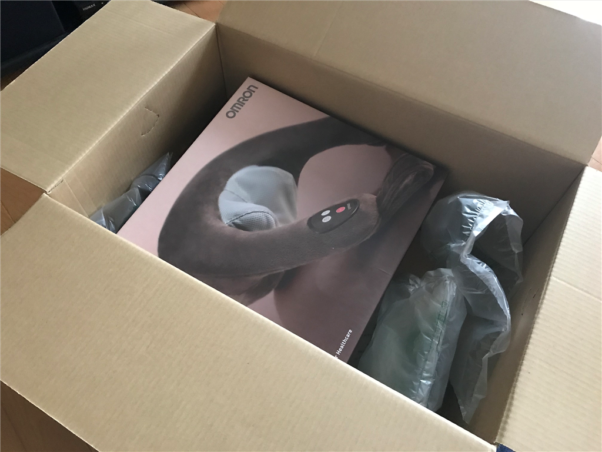
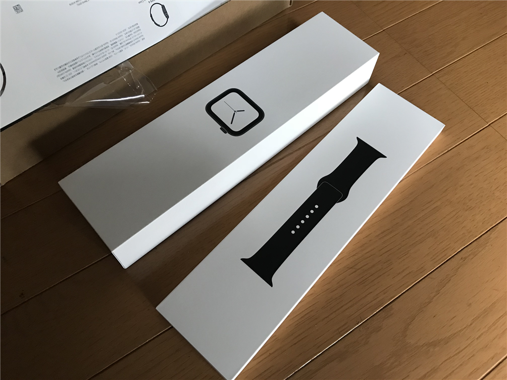

9月21日：HDD とネックマッサージャーと Apple Watch （Apple Watch の話はあまりない）
公開日：
今日も朝の3時に目が覚めたので、ポチポチと仕事をした。一仕事終えて6時前にゴミを出し、コンビニでお菓子を買う。そこからさらに8時ぐらいまで仕事をすると、ちょっと眠くなってきたので布団にダイブ。そのまま寝てしまったようで、起きたら昼前だった。
その間にクロネコヤマトが荷物を持ってきてくれていたらしい。てっきり Apple Watch だと思って開けてみたところ――

ネックマッサージャーでした（ぁぅぁぅ
以前、おかんに買ってあげたネックマッサージャーが結構よかったので、同じようなのが欲しかったんだな。
自分で買ったのはオムロンの安いヤツ。

オムロン ネックマッサージャー ブラウン HM-141-BW
- 出版社/メーカー: オムロン(OMRON)
- 発売日: 2014/07/18
- メディア: ホーム&キッチン
- この商品を含むブログ (2件) を見る
試しに使ってみたけど……前のものに比べると全然ダメだった。
まず、コードが邪魔。行動範囲にも制約がかかるし、折ったままコードが固まってしまっていて、マッサージしながらコードを伸ばしたら抜けて、マッサージが止まってしまった。AC アダプターの取り回しもめんどい。
肝心のマッサージ機能もイマイチ。もみ玉が小さいからか？ ガッチガチになった自分の肩にはあまり効かない。首以外にもさまざまな箇所で使えると謳ってるけど、実質的には首専用なデザインもイマイチ。これで背中とか足とかマッサージできるのかなぁ……。
前のヤツはもみ玉が大小2つずつ（？）あって、逆回転もできた。また、大雑把なデザインなので、首へのすわりは確かに悪かったけど、その分、肩甲骨なんかにも当てやすくて自由がきいた。まぁ、値段が倍ぐらい違うので比べるのはかわいそうだけど、んー……ここまで違うものかと思った。
気に入らないから返品、というのは Amazon を10年以上使ってて一度もやったことがないのだけど、これは返品して、おかんに買ってあげたやつと同じのを買おうかなと考えている。
あと、NAS に挿すための HDD が同梱されてたけど、その作業は週末にでもやるつもり。2ベイあるのに7年モノの HDD を1台しか挿さず、そのままずっとだましだまし運用してきたから、そろそろ限界だと思う。壊れる前に交換できそうでよかった（フラグ

ちなみに、Apple Watch は昼一でちゃんときた。午後3時ぐらいに開封してみたけど、結構気に入っている。これに関しては数日使ってから改めて触れるかもしれないし、触れないかもしれない。